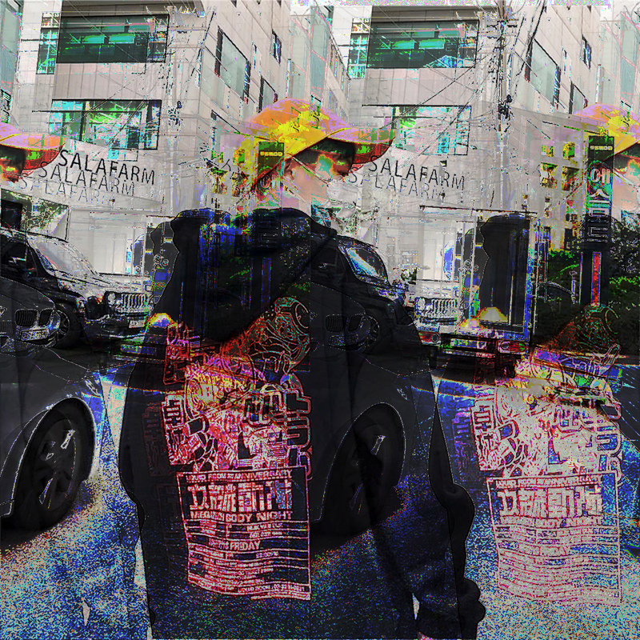
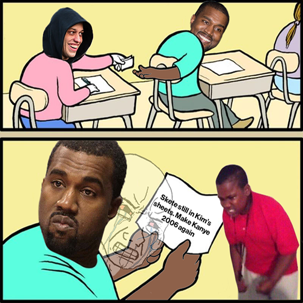
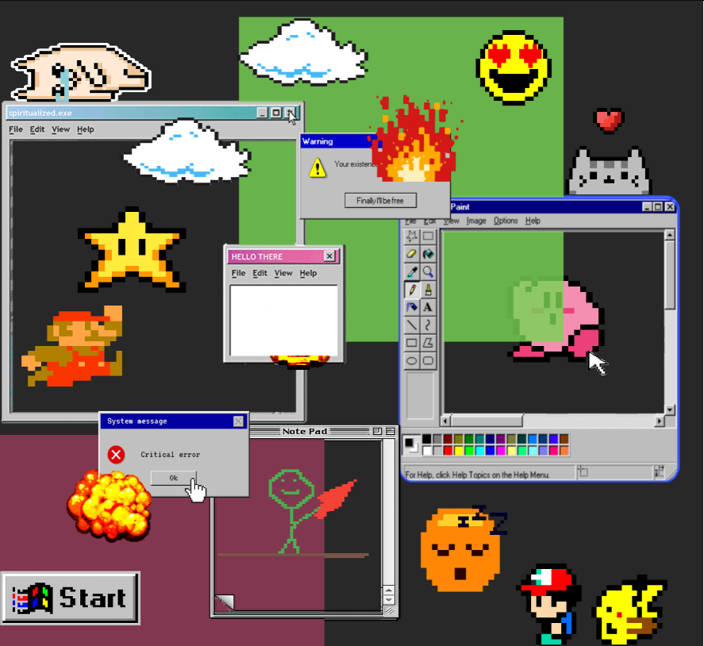
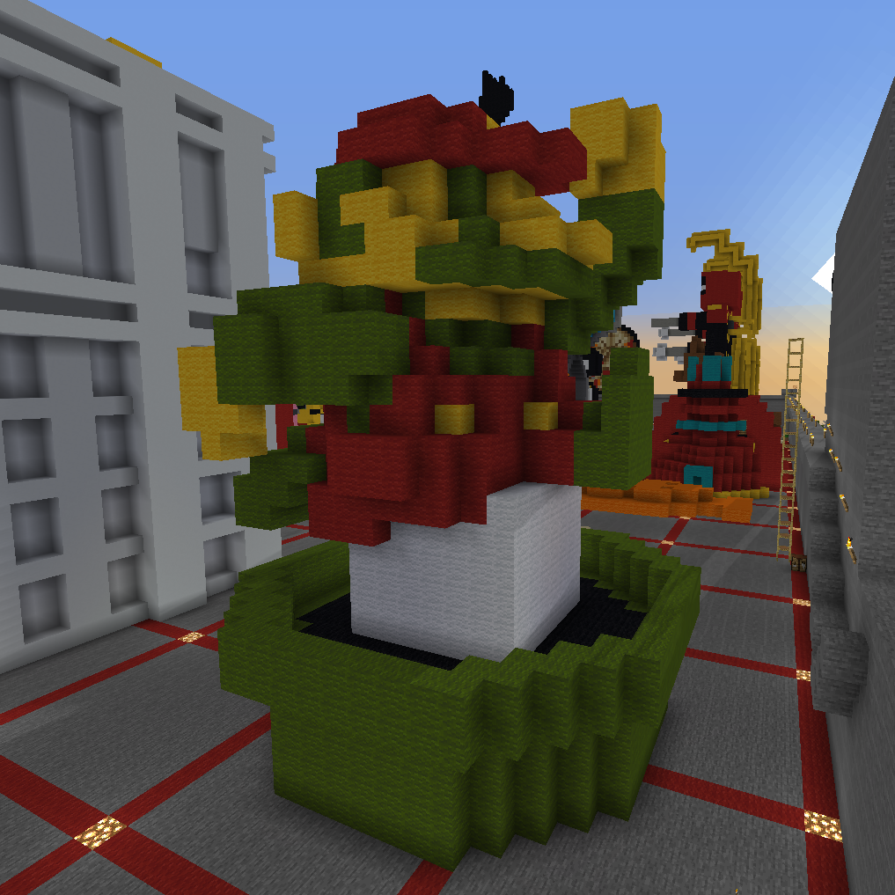
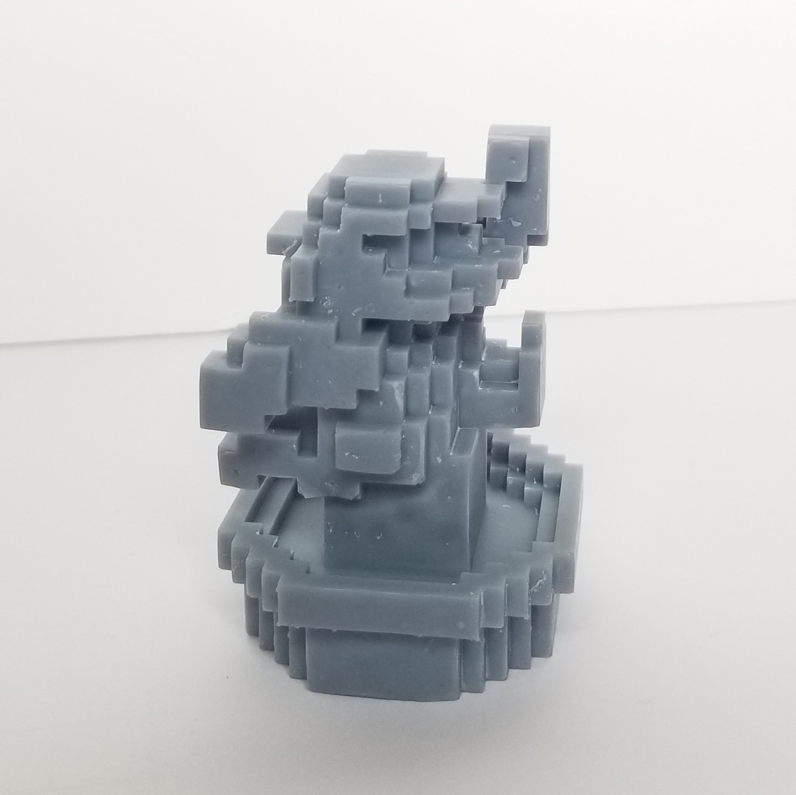
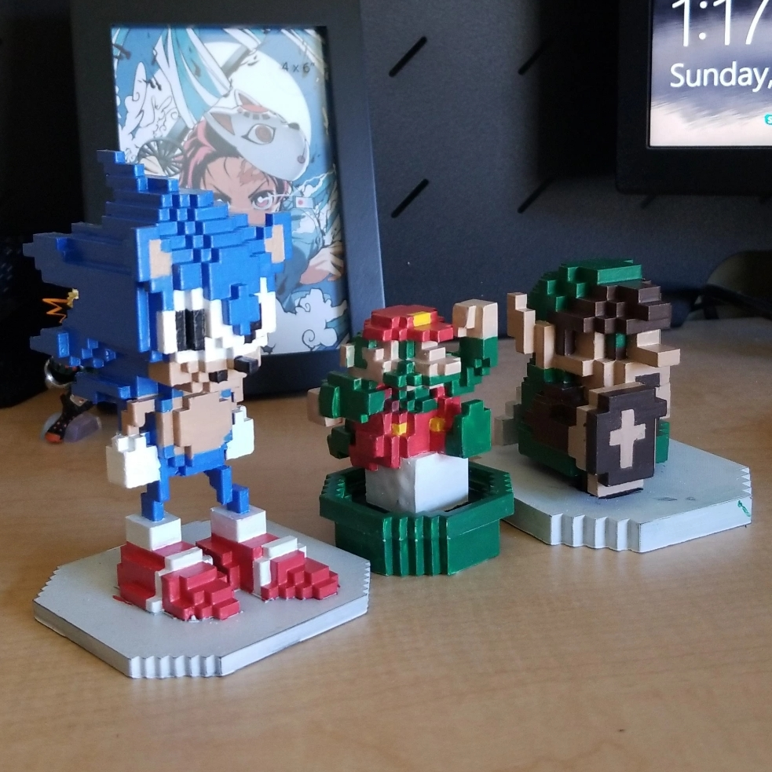

Welcome & take a look at my projects
ART 74 Portfolio
These are all the projects I've done in ART 74. Click the links under each respective picture to go to it's page.
"Fashion" Series (Glitch Art Project)
This project was a utilization of two different glitching methods using audio and the other was adjusting the image code.
view my glitch
Kanye West VS Pete Davidson (Meme Mashup Project)
This is a Photoshop meme mash up project.
view my meme
Net Art

This game is a point-and-click adventure where you the player are stuck in your subconscious and dreams.
view my game
DIYPS 2020
A doodling application that can specifically create retro windows aesthetic and 8-bit video game art.
view my tool
Retro Re:Imagined Part 1 (Minecraft Art)
 Using Minecraft to create creative 3d objects.
view my craft
Retro Re:Imagined Part 2 (3D Art)
Using the code of the models made in Minecraft to 3d-print into real objects
view my 3d
Retro Re:Imagined Final
Retro Re:Imagined Final. A celebratory project honroing video game culture taking old 2d sprites and turning it into 3d.
view my final